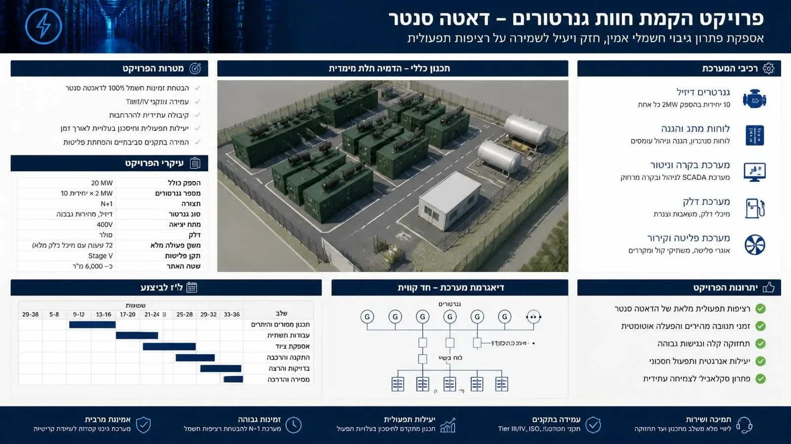

חוות שרתים נמדדת בזמינות. הפסקת חשמל של דקות בודדות יכולה לעלות ללקוחות שלה יותר מכל תשתית הגיבוי, ולכן כל חוות שרתים רצינית מחזיקה חוות גנרטורים שמסוגלת להחזיק את האתר כולו במשך שעות עד ימים. במאמר הזה נסביר איך בנויה מערכת כזו, מה המשמעות של תצורת N+1, ולמה דווקא תשתית הדלק, ולא הגנרטור עצמו, היא בדרך כלל החלק שקובע אם הגיבוי יעבוד כשצריך.
מה קורה ברגע שהחשמל נופל
כשאספקת החשמל מהרשת נקטעת, מערכות האל־פסק (UPS) מחזיקות את העומס באמצעות מצברים למשך שניות עד דקות. בזמן הזה הגנרטורים מותנעים, מגיעים למהירות ולמתח יציבים, ומפסק ההעברה האוטומטי (ATS) מעביר את העומס אליהם. כל התהליך אמור להסתיים בתוך שניות. משם הגנרטורים מחזיקים את האתר עד שהרשת חוזרת, או עד שנגמר הדלק.
תצורת N+1: יתירות שמאפשרת תחזוקה
האות N מציינת את מספר הגנרטורים הנדרש כדי לשאת את מלוא העומס של האתר. תצורת N+1 פירושה גנרטור אחד נוסף מעבר לנדרש, כך שגם כשיחידה אחת מושבתת לתחזוקה או נכשלת, החווה עדיין מספקת את מלוא ההספק. חוות שרתים בדרגות זמינות גבוהות יותר עובדות בתצורות מחמירות עוד יותר, כמו 2N (שתי מערכות מלאות ונפרדות).
לדוגמה, אתר שצורך 18 מגה־וואט יכול להיבנות מעשר יחידות של 2 מגה־וואט: תשע לעומס ואחת רזרבית. היחידות מסונכרנות דרך לוחות סנכרון ולוחות ראשיים, ומערכת הבקרה מחליטה אילו יחידות פועלות ובאיזה עומס.
תשתית הדלק: איפה רוב הפרויקטים נופלים
גנרטור בלי דלק הוא ברזל. חוות גנרטורים מתוכננת בדרך כלל לזמן פעולה מוגדר בעומס מלא, לרוב בין 24 ל־72 שעות, ומזה נגזר נפח האחסון. עשר יחידות של 2 מגה־וואט בעומס מלא צורכות אלפי ליטרים של סולר בשעה, ולכן מדובר במאות אלפי ליטרים של אחסון באתר.
מיכלים ראשיים
האחסון המרכזי נעשה במיכלים תת־קרקעיים בדופן כפולה או במיכלים עיליים בתוך מאצרה. השיקולים דומים לאלה של תחנת דלק: מניעת זיהום קרקע, ניטור דליפות, נקודות מילוי נגישות למכליות, ואוורור. ההבדל הוא בקנה המידה ובדרישת הזמינות: המילוי חייב להתאפשר גם כשהחווה פועלת.
מיכלי יום וצנרת הזנה
ליד כל גנרטור, או בתוך הקונטיינר שלו, יושב מיכל יום קטן שמזין את המנוע ישירות. משאבות העברה ממלאות את מיכלי היום מהמיכלים הראשיים דרך צנרת הזנה, בדרך כלל בתצורה יתירה: שתי משאבות ושני קווים, כך שכשל אחד לא משבית את ההזנה. הצנרת בדופן כפולה, עם גילוי דליפות, ומתוכננת כך שכל יחידה יכולה לקבל דלק מכל מיכל ראשי.
איכות הדלק
סולר שעומד חודשים במיכל סופג מים, מפתח גידולים ביולוגיים ומשקע. גנרטור שמותנע בשעת חירום עם דלק מזוהם ייעצר על סתימת מסננים. לכן חוות גנרטורים כוללת מערכת סינון וסחרור (fuel polishing) ותוכנית בדיקות דלק תקופתיות.
בקרה, ניטור ובדיקות
מערכת בקרה מרכזית (SCADA או מערכת ניהול מבנה) עוקבת אחרי מצב כל יחידה, מפלסי הדלק בכל מיכל, טמפרטורות, תקלות והתראות דליפה, ומאפשרת הפעלה ובקרה מרחוק. אבל בקרה לא מחליפה בדיקות:
- הרצה תקופתית: הנעת כל יחידה בפרקי זמן קבועים, גם בלי הפסקת חשמל.
- בדיקת עומס (Load bank): הרצה בעומס מלא מול עומס מלאכותי, כדי לוודא שהיחידות והדלק מחזיקים.
- בדיקת מעבר מלא: ניתוק יזום מהרשת ומעבר לגנרטורים עם העומס האמיתי של האתר.
פליטות, רעש והסביבה
עשרות מנועי דיזל גדולים הם מקור פליטות ורעש משמעותי, גם אם הם פועלים שעות ספורות בשנה. תכנון החווה מתייחס לתקני פליטה של המנועים, לגובה ולמיקום הארובות, למשתיקי קול ולמעטפת אקוסטית, ולמרחק ממבנים רגישים. כל אלה משפיעים על עבודות התשתית: בסיסים, תעלות, יסודות לקונטיינרים ולמערכות הקירור.
מה נדרש מקבלן התשתיות
| תחום | עבודות עיקריות |
|---|---|
| עבודות עפר ופיתוח | הכשרת שטח, חפירה לבורות מיכלים ותעלות צנרת, מילוי מבוקר, ניקוז |
| בסיסים ומבנים | בסיסי בטון לקונטיינרים ולמיכלים, מאצרות, מבנה בקרה, גדרות |
| מיכלי דלק | הנחה, עיגון, חיבור, בדיקות אטימות, מערכות מילוי ואוורור |
| צנרת הזנה | צנרת בדופן כפולה, משאבות העברה, מיכלי יום, בדיקות לחץ ותיעוד |
| תיאום | עבודה מול יועץ החשמל, ספק הגנרטורים, יועץ הסביבה והרגולציה |
שאלות נפוצות
לכמה שעות פעולה מתכננים את אחסון הדלק?
זה נקבע לפי דרגת הזמינות של האתר, לפי הסכמי אספקת דלק בחירום, ולפי דרישות הלקוח. טווח מקובל הוא 24 עד 72 שעות בעומס מלא, כשהאתר מסתמך על אספקה במכליות מעבר לכך.
מיכלים תת־קרקעיים או עיליים?
תת־קרקעיים חוסכים שטח ומוגנים יותר מפגיעה ומחום, אבל דורשים חפירה, עיגון וניטור מחמיר. עיליים זולים יותר להתקנה ולתחזוקה, אבל דורשים מאצרה, הגנה מפני פגיעה ולעיתים הגנה אקטיבית מאש. הבחירה תלויה בשטח, בקרקע ובדרישות הבטיחות.
מה ההבדל בין תשתית דלק לחוות שרתים לבין תחנת דלק?
הטכנולוגיה דומה: מיכלים בדופן כפולה, צנרת עם גילוי דליפות, ניטור. ההבדלים הם בנפחים הגדולים בהרבה, בדרישת היתירות בכל מרכיב, ובעובדה שהדלק עומד זמן רב ולא מתחלף כל יום. לכן הניסיון מתחנות דלק רלוונטי מאוד, אבל התכנון חייב להתאים לעולם הזמינות של חוות שרתים.